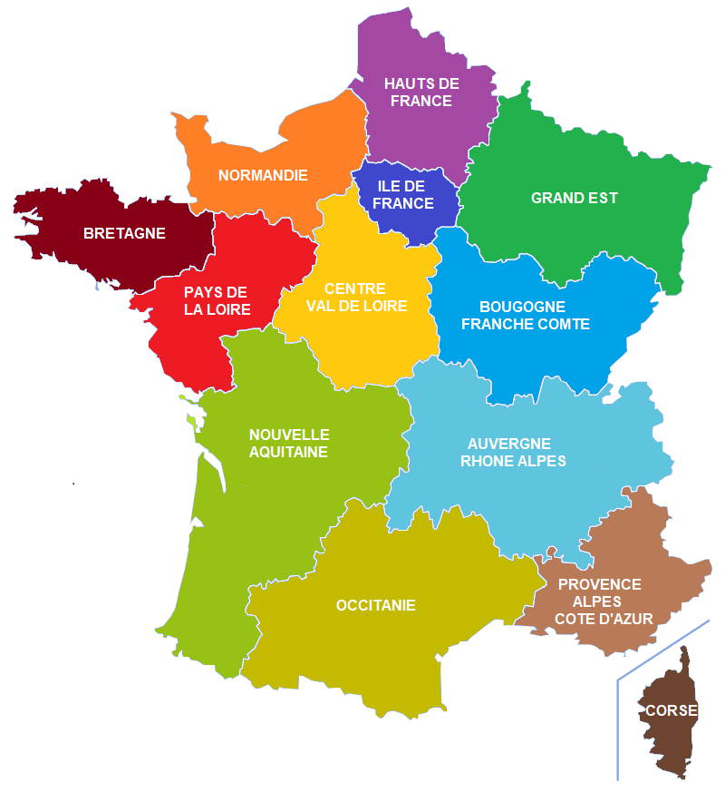
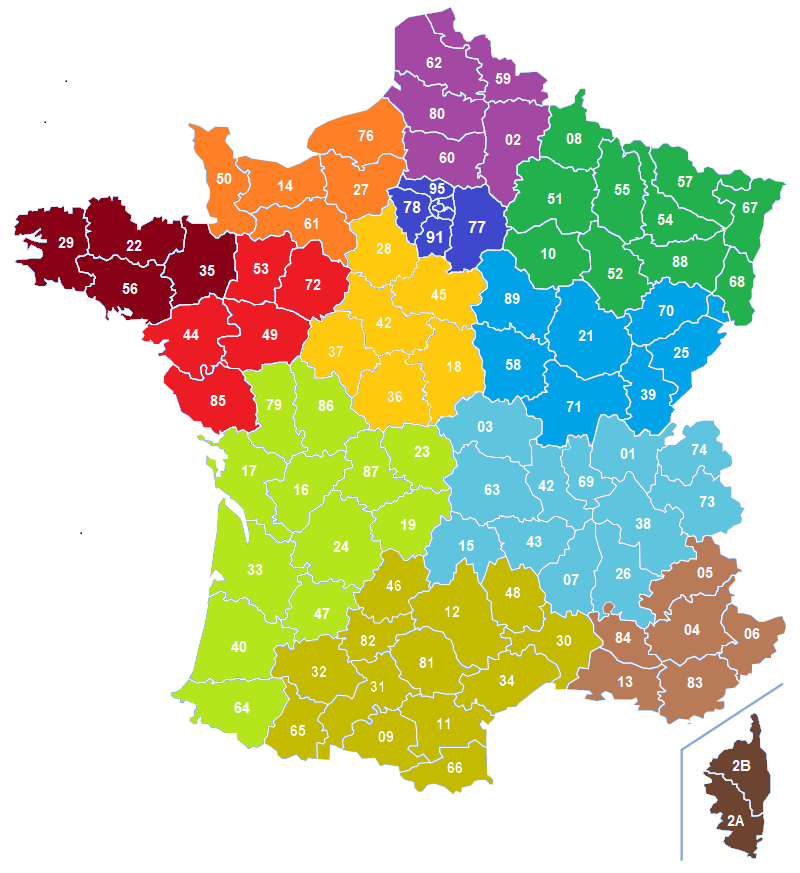

ACCUEIL
A PROPOS
CONTACT
MON CV
Carte de France métropolitaine
Sélectionnez la carte à afficher
Par département
Ain (01)
Allier (03)
Ardèche (07)
Cantal(15)
Drôme (26)
Isère (38)
Loire (42)
Haute-Loire (43)
Puy-de-Dôme(63)
Rhône (69)
Savoie (73)
Côte-d'Or (21)
Doubs(25)
Jura (39)
Nièvre (58)
Haute-Saône(70)
Saône-et-Loire (71)
Yonne (89)
Territoire de Belfort(90)
Côtes-d'Armor (22)
Finistère (29)
Ille-et-Vilaine (35)
Morbihan (56)
Cher(18)
Eure-et-Loir(28)
Indre (36)
Indre-et-Loire (37)
Loir-et-Cher (41)
Loiret (45)
Corse-du-Sud (2A)
Haute-Corse (2B)
Ardennes (08)
Aube (10)
Marne (51)
Haute-Marne (52)
Meurthe-et-Moselle (54)
Meuse (55)
Moselle (57)
Bas-Rhin (67)
Haut-Rhin (68)
Vosges (88)
Aisne (02)
Nord (59)
Oise (60)
Pas-de-Calais (62)
Somme (80)
Paris (75)
Seine-et-Marne (77)
Yvelines (78)
Essonne (91)
Hauts-de-Seine (92)
Seine-Saint-Denis (93)
Val-de-Marne (94)
Val-d'Oise (95)
Calvados (14)
Eure (27)
Manche (50)
Orne (61)
Seine-Maritime (76)
Charente (16)
Charente-Maritime (17)
Corrèze (19)
Creuse (23)
Dordogne (24)
Gironde (33)
Landes (40)
Lot-et-Garonne (47)
Pyrénées-Atlantiques (64)
Deux-Sèvres (79)
Vienne (86)
Haute-Vienne (87)
Ariège (09)
Aude (11)
Aveyron (12)
Gard (30)
Haute-Garonne (31)
Gers (32)
Hérault (34)
Lot (46)
Lozère (48)
Hautes-Pyrénées (65)
Pyrénées-Orientales (66)
Tarn (81)
Tarn-et-Garonne (82)
Loire-Atlantique (44)
Maine-et-Loire (49)
Mayenne (53)
Sarthe (72)
Vendée (85)
Alpes-de-Haute-Provence (04)
Hautes-Alpes (05)
Alpes-Maritimes (06)
Bouches-du-Rhône (13)
Var (83)
Vaucluse (84)
Par région
Auvergne-Rhône-Alpes
Bourgogne-Franche-Comté
Bretagne
Centre-Val de Loire
Corse
Grand Est
Hauts-de-France
Île-de-France
Normandie
Nouvelle-Aquitaine
Occitanie
Pays de la Loire
Provence-Alpes-Côte d'Azur

